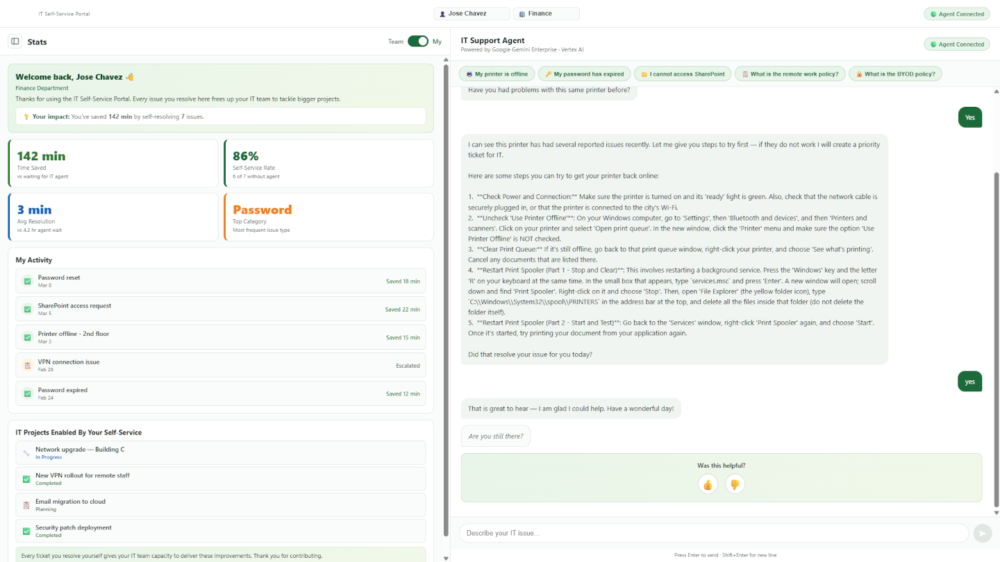
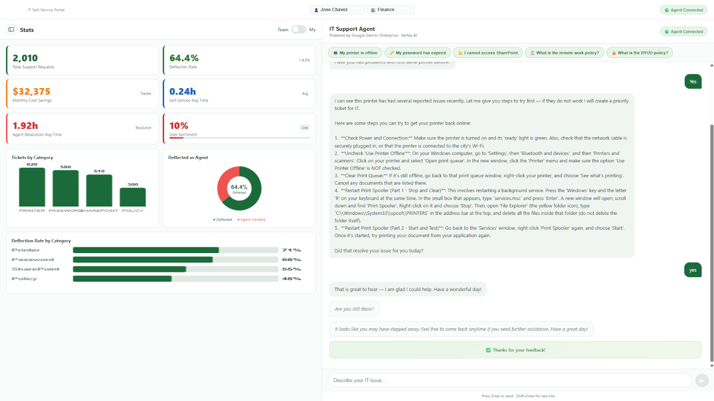

In most SLED IT departments, the helpdesk runs on a familiar loop: employee has a problem, submits a ticket, waits in queue, gets a response. The backlog grows. Staff spend a significant portion of their day on Tier 1 issues — password resets, printer connectivity, VPN access, software installs — that follow the same resolution path every time.
The problem is not that IT staff are slow. The problem is that the system requires a human to be in the loop for issues that have documented, repeatable fixes. Every Tier 1 ticket that reaches a technician is time that could have been spent on something that actually requires judgment.
An IT helpdesk agent changes that ratio without changing your existing ticketing system.
What the Agent Actually Does
The IT Helpdesk Agent is a conversational AI portal built on Google Cloud and grounded in the organization's own IT knowledge base. It handles the full Tier 1 resolution flow — and creates a structured ticket in ServiceNow when it cannot resolve the issue itself.
The flow is straightforward. The employee describes their problem in plain language. The agent triages with one targeted clarifying question, follows up with one more if needed, then searches the internal knowledge base and delivers a resolution in plain English — maximum five steps. If the employee confirms the issue is resolved, the conversation closes. If not, the agent creates a ticket automatically with all context captured, no re-entry required.

The management view shows live metrics — tickets deflected, resolution rate, active conversations, and a real-time satisfaction score updated after every resolved interaction. IT leadership has visibility into what is being resolved, what is being escalated, and where the knowledge base has gaps.

"Every Tier 1 ticket the agent resolves is 15 to 30 minutes returned to your IT staff. At volume, that is a meaningful shift in how the team spends its time."
Grounded in Your Knowledge Base, Not Generic AI
The difference between a generic AI assistant and this agent is the data it reasons over. The IT Helpdesk Agent searches the organization's own internal documentation — KB articles, SOPs, known issue logs, configuration guides — using Vertex AI Search. It does not rely on public internet knowledge or general training data to answer questions about your specific environment.
This matters for two reasons. First, the answers are accurate for your systems, not a generic approximation. Second, the data stays inside your Google Cloud boundary. Employee names, department information, and IT issue details never leave your environment.
How It Connects to ServiceNow
The agent does not replace ServiceNow — it sits in front of it. When the agent cannot resolve an issue, it creates a structured ticket automatically with the full conversation context, the issue category, the employee's name and department, and any diagnostic information gathered during triage. The ticket arrives in ServiceNow complete, not as a one-line description that the technician has to investigate from scratch.
Tickets created by the agent are consistently better structured than self-submitted tickets. Technicians get more context. Resolution time on escalated issues goes down even when the agent does not fully resolve the issue itself.
What a Pilot Looks Like
An IT helpdesk pilot starts with the knowledge base. Existing KB articles, SOPs, and common issue documentation are loaded into a private Vertex AI Search instance. The agent is configured with the organization's issue categories and escalation thresholds. The portal is deployed on Google Cloud Run.
The full build fits within the Gemini Starter Pack service hours. Most IT teams see measurable Tier 1 deflection within the first two weeks — and have a clear picture of which knowledge base gaps to close to increase that rate further.